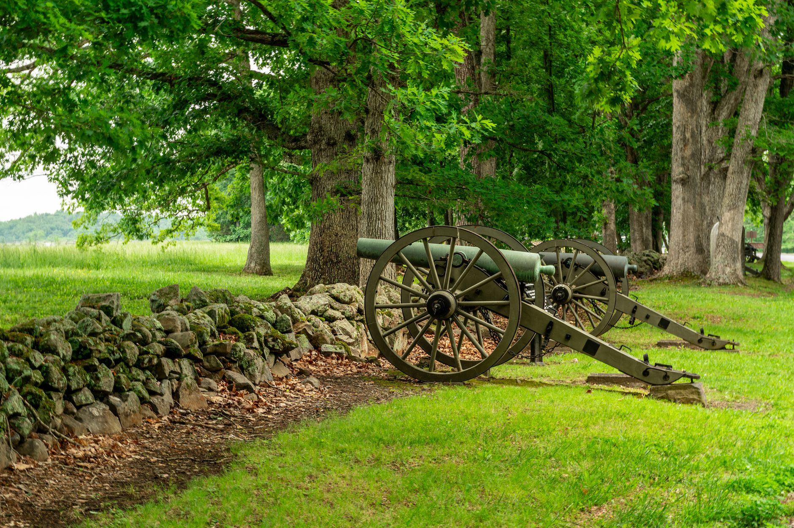

Season 1, Episode 3 — The Class of 1842
Four corps commanders from one West Point class. The man who was best man at Grant's wedding. The man who married Stonewall Jackson's sister. The man who briefly outranked Grant. And the man everyone hated. The Class of 1842 produced them all — and none of them is the famous one.
In 1842, fifty-six young men graduated from the United States Military Academy. By any measure, they were an unremarkable lot — the army they joined was tiny, peacetime promotions were glacial, and most of them expected to spend their careers drilling in forgotten frontier posts. Then the Mexican-American War broke out in 1846, and their careers were saved. Then the Civil War broke out in 1861, and their names were written into history.
Ranked by some historians as the class that produced the most senior commanders relative to its size, the Class of 1842 earned a nickname that has stuck for almost two centuries: "the class the gods sent." The source of the quote is apocryphal — no one can quite pin down who said it first — but it fits. Four men from this class became corps commanders, two of them among the most consequential generals of the war. No other class produced so many at so high a level.
Here are the four.
Almost last in his class. One spot above expulsion. And yet James Longstreet became Robert E. Lee's most trusted lieutenant — "Lee's Old War Horse," the man Lee leaned on through every campaign from Antietam to Appomattox.
Longstreet was from Georgia, but his wife was from Minnesota and his closest friend in the Old Army was a quiet Ohioan named Ulysses S. Grant. As you learned in Module 2, Longstreet was best man at Grant's wedding in 1848. Julia Grant wrote that Longstreet was "one of the most devoted of friends." Fourteen years later, they were shooting at each other.
As a commander, Longstreet was slow, methodical, and a defensive genius. He understood something that Lee never fully accepted: the Confederacy could not win a war of annihilation against the North. The best strategy was to fight defensively, bleed the Union, and force a negotiated peace. Lee disagreed. Lee believed in audacity. And at Gettysburg, that disagreement produced one of the war's great what-ifs.
At Gettysburg on July 3, 1863, Lee ordered a direct assault on the center of the Union line — what would become known as Pickett's Charge. Longstreet told him it was a mistake. The Union position was too strong. The approach was too exposed. The artillery preparation was insufficient. He said to Lee: "It is my opinion that no 15,000 men ever arrayed for battle can take that position." Lee overruled him. The charge failed. Over half the attackers were killed or wounded. Lee rode out to meet the survivors and said, "It is all my fault." But Longstreet never forgot that Lee had not listened. And Lee, for his part, never fully forgave Longstreet for being right.
After the war, Longstreet made a choice that destroyed his reputation in the South. He became a Republican. He publicly embraced Black suffrage. He accepted a position in the Grant administration. He was the only Confederate general to do any of this — and his fellow Southerners never forgave him. They called him a traitor, a scalawag, a Judas. Lost Cause writers spent decades vilifying him, painting him as the man who lost Gettysburg by moving too slowly. The truth is the opposite: Longstreet was right about Gettysburg. He was Lee's most reliable commander. And his post-war conversion was, in part, an act of loyalty to the friend he had fought against — Grant.

Daniel Harvey Hill was a scholar-soldier. He graduated in the middle of his class — 28th of 56 — and spent the rest of his life proving he was smarter than everyone else. After the war, he wrote textbooks on mathematics and tactics. Before the war, he was a professor at Washington College (later Washington and Lee University).
Hill also married Stonewall Jackson's sister, making him Jackson's brother-in-law. The two men were alike in many ways: both fiercely religious, both deeply stubborn, both convinced that God was on their side. But where Jackson earned legend, Hill earned enemies.
Hill was a divisive figure — brilliant but prickly, argumentative to a fault. He feuded with nearly every superior officer he served under, including Braxton Bragg, Jefferson Davis, and even his brother-in-law Jackson at times. But when he was good, he was very good. He fought brilliantly at Antietam, where his division held the line at the Bloody Lane until reinforcements arrived. He fought well at Chickamauga, where Longstreet's breakthrough gave the Confederacy its last major victory in the West.
After the war, Hill became president of the University of Arkansas and later of the Georgia Military College. He never stopped writing, arguing, or teaching.
William Rosecrans was the high achiever of the Class of 1842 — top 10, an engineer and inventor, a man of immense talent and ambition. He was also a devout Catholic, unusual for a 19th-century American military officer, having converted to Catholicism later in life.
In the early years of the war, Rosecrans looked like Grant's superior — and briefly, he was. Rosecrans commanded the Army of the Cumberland, one of the Union's largest field armies, while Grant was still fighting to prove himself in the West. At Stones River (1862–63), Rosecrans won a critical victory that boosted Northern morale after the disaster at Fredericksburg. The future seemed bright.
Then came Chickamauga. In September 1863, Rosecrans pursued Bragg's Confederate army into the mountains of northern Georgia. He made a critical error: he spread his army too thin, creating a gap in his lines. James Longstreet — his own classmate from 1842 — smashed through that gap and routed almost the entire Union army. Only George Thomas's heroic stand prevented a complete destruction.
Rosecrans fled the field and rode to Chattanooga, a broken man. Grant, now his superior, relieved him of command. Rosecrans never held a major command again. He served in minor administrative roles for the rest of the war, watching from the sidelines as the men he had once outranked won the war without him.
John Pope was the braggart. Everyone hated him — including his own side. He arrived in the Eastern Theater in 1862 fresh from modest successes in the West and immediately issued a pompous address to his new army: "I have come to you from the West, where we have always seen the backs of our enemies." This was not a smart thing to say to men who had been fighting (and losing to) Lee and Jackson for over a year.
Pope's confidence was not matched by his competence. At Second Bull Run (August 1862), Lee and Jackson demolished him. Jackson marched his army around Pope's flank and destroyed his supply base at Manassas Junction. Then Lee arrived with Longstreet's wing and crushed Pope's army on the same ground where the war's first major battle had been fought fourteen months earlier. Pope's casualties were staggering. His reputation was destroyed.
After his defeat, Pope was exiled to the frontier command in Minnesota, tasked with putting down the Dakota War. He never held a major command against Lee again. Abraham Lincoln, who had an eye for character, said that Pope's problem was that he "looked like a gamecock, talked like one, but couldn't fight like one."
"I have come to you from the West, where we have always seen the backs of our enemies." — John Pope, upon taking command of the Army of Virginia, 1862
Pope's is the story of a man who talked himself into a job he couldn't do. The Class of 1842 produced defensive geniuses and brilliant failures. Pope was their cautionary tale.
It is worth returning to this friendship one more time, because it is the single thread that ties the war's two most important figures together. At Grant's wedding in 1848, Longstreet stood beside him. Julia Grant — the bride — wrote of Longstreet that he was "one of the most devoted of friends." The two men had served together in Mexico, shared the hardships of the Old Army, and trusted each other completely.
Then the war came. Longstreet chose the Confederacy. Grant chose the Union. For four years, they tried to kill each other — Longstreet as Lee's right hand, Grant as the man who would eventually beat Lee. At Chickamauga, Longstreet crushed Grant's friend Rosecrans. At the Wilderness, Grant attacked Lee's army with Longstreet standing in his path. At Appomattox, it was Grant who received Lee's surrender — and it was Longstreet who stood nearby, watching his oldest friend accept the flag of his defeated cause.
After the war, Grant protected Longstreet. When other Confederate generals faced prosecution or struggled to rebuild, Grant put Longstreet on a personal pardon list — even though Longstreet never asked for one. Longstreet repaid the loyalty by becoming the only Confederate general to join the Republican Party, publicly support Black voting rights, and serve in the Grant administration. The South never forgave him. But Longstreet had chosen his side — and it was the same side he had been on since 1848, when he stood next to a shy groom named Hiram Ulysses Grant and watched him get married.
The Longstreet-Grant story is the most personal relationship in the Civil War. It spans the entire arc: classmates at West Point (1840–42), best man at a wedding (1848), enemies on the battlefield (1861–65), and political allies in Reconstruction (1868–77). No other relationship in the war touches so many phases of American history. It is the spine of this course.
Class of 1842 at a Glance:
How this works: Work through each phase in order. Don't scroll ahead to the answers.
Which one does NOT belong?
Cover the answers below. For each clue, respond in the form of "Who is…" or "What is…". Answers are at the bottom of this page.
Phase 1 (Odd One Out):
Phase 2 (Core Jeopardy):
Phase 3 (Previously On… — Modules 1–2):
In Module 4, we turn to the most famous class in West Point history: the Class of 1846. McClellan, Jackson, A.P. Hill, Pickett. Fifty-nine graduates. Twenty-two generals. One love triangle. Two men who hated each other for a woman's affection. And the grinder who turned himself into a legend. If the Class of 1842 is "the class the gods sent," the Class of 1846 is the one the gods designed for television.
For the definitive modern account of Longstreet's life and his relationship with Grant, read Elizabeth Varon's Longstreet: The Confederate General Who Defied the South (2023). It is the best book on the long arc of Longstreet's story from West Point to Reconstruction.
For John Pope's disaster at Second Bull Run, any good military history of that battle will do — John Hennessy's Return to Bull Run: The Campaign and Battle of Second Manassas (1993) is the standard.
For a broader treatment of the Class of 1842, John C. Waugh's The Class of 1846 also covers the senior class that graduated alongside them — the two classes together tell the full story of the West Point generation that fought the war.
Have questions? Want me to dig deeper into Longstreet's post-war conversion, or explore the Chickamauga battle in detail? Just ask — I'm your teacher.